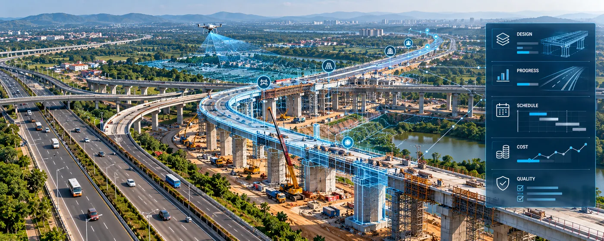

The Assignment
Large transportation infrastructure programmes require coordinated technical, engineering and project-management inputs across planning, design, construction and monitoring. Managing spatial data, engineering models, schedules, costs and project information in separate systems can limit visibility and make effective coordination more difficult.
The assignment involved applying integrated technical consultancy and digital project-management capabilities to support transportation infrastructure delivery, combining technical due diligence, project management, engineering and digital modelling with project monitoring and information management.
Our Approach
CS TECH Ai combines transportation engineering and project-management expertise with geospatial and digital technologies to support infrastructure projects across their lifecycle.
The engagement included:
- Technical due diligence and design consultancy
- Pre-feasibility studies and proof checking
- Project Management Consultancy (PMC)
- Detailed Project Report (DPR) support
- Road safety audits
- Corridor mapping using LiDAR and related technologies
- Integration of spatial and non-spatial project information
- Development and management of 3D, 4D and 5D models
- Integration of project schedule and cost information
- Implementation of a Common Data Environment (CDE)
- Project monitoring through digital dashboards and project-management information systems
- Project supervision and quality review
- Integration of project and asset information to support infrastructure management
CS TECH Ai's Digital Project Management System brings together 3D models and other spatial and non-spatial information, with time and cost incorporated as the fourth and fifth dimensions, creating an integrated environment for infrastructure monitoring and management.